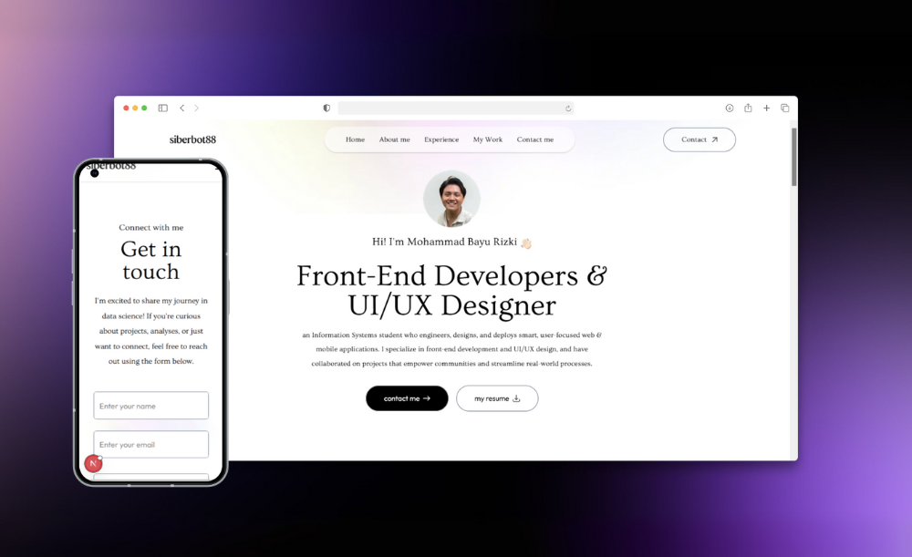

Crafting Technology with Purpose: The Portfolio of Mohammad Bayu Rizki
Mohammad Bayu Rizki is a passionate and driven Information Systems student at UPN "Veteran" Jawa Timur, currently in his fifth semester. His digital portfolio highlights a journey rooted in creativity, technical expertise, and purposeful design—reflecting his commitment to delivering impactful web and mobile solutions through intuitive user experiences.

The website introduces Bayu's professional persona, showcasing key projects that underline his strengths in front-end development, UI/UX design, and agile project implementation. With a clean and interactive interface, visitors are guided through various sections including featured academic projects, personal development endeavors, and collaboration experiences.
Among the most notable works is HarvestFarm, an e-commerce platform tailored for agricultural distribution, developed both as a mobile app and a responsive web application. In these projects, Bayu took the lead as a front-end developer and UI/UX designer, crafting seamless interfaces using tools like Android Studio, Laravel Livewire, and Figma. His design thinking approach tackled real-world issues such as unfair pricing, digital illiteracy, and limited market access for local farmers—delivering solutions aligned with SDG goals.
The portfolio also features Safetion, a mobile UI/UX prototype promoting workplace safety, which was submitted to the UNIKOM Fest UI/UX Competition. Additionally, his personal website project, built with HTML, CSS, and JavaScript, demonstrates his mastery of responsive design and animation integration—providing a live showcase of his web development fundamentals.
Beyond academic projects, Bayu’s experiences include his participation in the Samsung Innovation Campus by Hacktiv8, where he integrated AI and IoT to solve real-world problems. He is also an active member of the Google Developer Group On Campus and served as a graphic design lead in his high school’s multimedia lab, where his motion graphic works were nationally recognized.
Technically, Bayu is proficient in a wide range of tools and technologies, including Tailwind CSS, Laravel, Alpine.js, React, Firebase, MySQL, Git, and Docker. He pairs this with a strong foundation in critical thinking, teamwork, and communication—making him not just a developer, but a well-rounded digital creator.
His portfolio website is more than just a résumé—it's a living testament to a young technologist’s vision, potential, and dedication to using technology as a tool for inclusive progress. For potential collaborators, recruiters, or fellow developers, the site provides a compelling invitation to connect with a future-ready digital innovator.